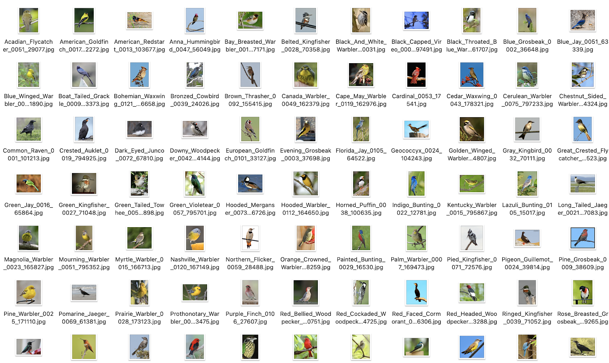

BirDress
AI, Machine Learning + Fashion Design + Nature Data
Explorations of Contemporary Fashion Design with Datasets of Bird Imagery using Machine Learning Technology StyleGAN
2021
Code | Python
I. PROCESS
Questions
Nature offers us creative resources.
HOW WOULD DATA OF ORGANIC LIFE FORMS IN NATURE INTERACT WITH CONTEMPORARY FASHION DESIGN?
Machine learning helps us manifest.
HOW CAN FASHION DESIGN DRAW DIRECT INSPIRATION FROM NATURE THROUGH STYLEGAN TECHNOLOGY?
Domains
Datasets
For bird data, CalTech’s Birds (2011) dataset from kaggle.com has been accessed at first. The initial dataset included 200 different bird species with 11,788 PNG file images. Then, selection of bird species with stricking visual features took
place, leaving the dataset with 83 different species and the total of 4980 photographs. Then, selection of 1 largest and clearest image per bird took place, leaving the dataset with only 83 images.
Initially, the project planned to use only the images of birds that have gone extinct. The reasons of extinction varied, but the primary cause was due to environmental issues, such as climate change, global warming, deforestation, and
desertification. However, it was proven to be extremely difficult to collect images of extinct species during the research process. The project had to shift its direction from environmentally oriented inquiry to a more visually driven
endeavor, while recognizing the potentiality to involve its initial inquiry at an appropriate time in the future.

For fashion data, the visionary designer Iris van Herpen’s haute
couture dress images were manually collected from the archive
of the brand’s official website. The total 400 PNG files from 15
distinct collections were compiled into a dataset. All of Iris van
Herpen’s haute couture collections have been accessed, and
their official titles are Roots of Rebirth, Sensory Seas, Hypnosis,
Shift Souls, Syntopia, Ludi Naturae, Aeriform, Between The Lines,
Seijaku, Lucid, Wilderness Embodied, Voltage, Hybrid Holism, Micro,
and Capriole in the order listed on the brand’s website.
Iris van Herpen’s haute couture was chosen as the collections
are predomonantly dresses, which in essence resembles the
appearances of birds. Herpen’s pattern-oriented, boldly shaped
dress designs invoke organic, kinetic movements of living creatures,
especially those of feathered birds.
Training
When machine was trained with the dress data alone, it failed to
produce any meaningful results. It was trained for over 6 hours,
but the results stayed the same, as shown above. As the first mixed
data training attempt, the dress dataset was added onto the ongoing
training of the bird dataset, the machine could not even
start the learning process, and the following error occured: "axes
don’t match the array." The second mixed data training approach
was to train from the beginning a mixed dataset of selected bird
images and randomly seletected dress images. Again, the same
error occured: "axes don’t match the array."
The third and successful method of mixed data training was the
following: refine the mixed dataset for bird images and dress images
to be axially aligned, by removing all bird images with horizontal
layouts and removing all dress images with perpendicularly
thin layouts, so that all remaining bird images resemble the
general physiological human shapes and all remianing dress images
resemble the general phisiological bird shapes. The method
was effective, and the project landed on a powerful set of results.
II. PRODUCT
SELECTED OUTPUTS AFTER 6 HOURS OF TRAINING
The training sessions lasted for the total of 12 hours, but the most prominent, interesting, and visually notable results emerged after 6 hours and 9 hours. The images from 6 hours of training display elegant layers and fuzzy volumes. The ruffle-like texures add complexity to the overall designs.
.png)
.png)
.png)
.png)
.png)
.png)
.png)
.png)
.png)
.png)
.png)
.png)
SELECTED OUTPUTS AFTER 9 HOURS OF TRAINING
After 9 hours of training, the project developed to images of more voluminous, colorful, and dynamical dress designs. The continued training after 9 hours resulted in the dissolution of the coherent shapes achieved at 6th and 9th hour points. Such a phenomenon asks for more explorations of StyleGAN training.
.png)
.png)
.png)
.png)
.png)
.png)
.png)
.png)
.png)
.png)
.png)
.png)
III. POSTERS


*created in the style of and as homage to designer David Carson
IV. VIDEO


V. CONCLUSION
Technology
Visual Strength > Size of Dataset
Axial Alignment > Color Alignment
Concept
StyleGAN's powerful learning and generating capacities can offer interesting abstracts.
Data of nature and fashion collaborate with each other in creative ways.